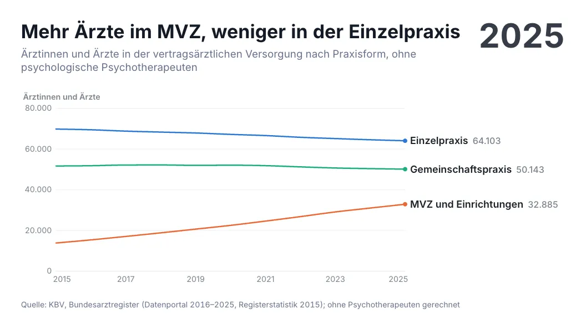
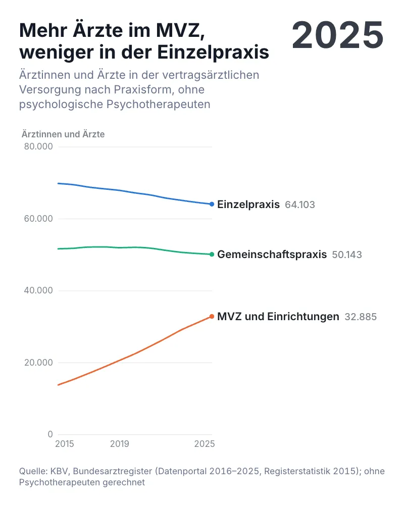
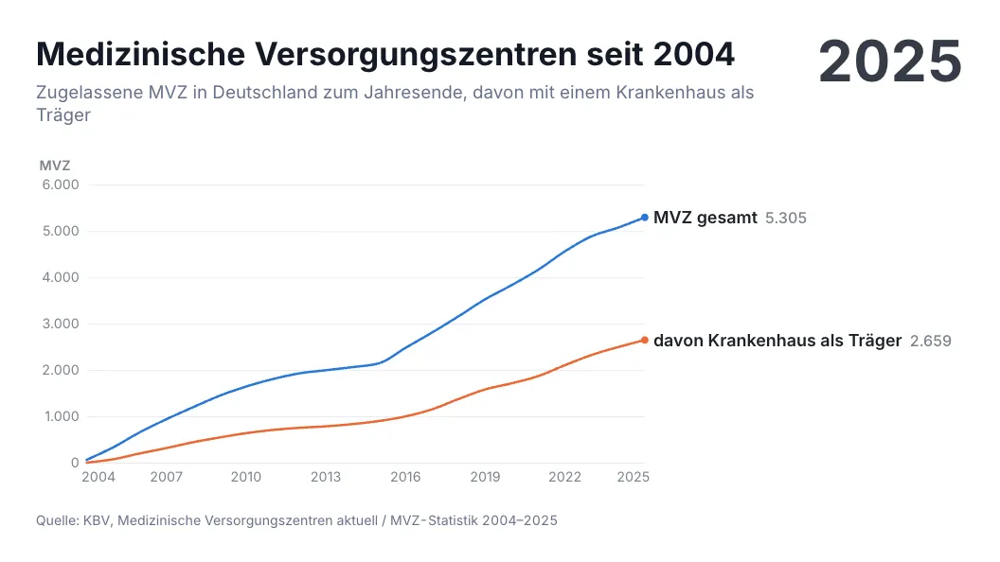
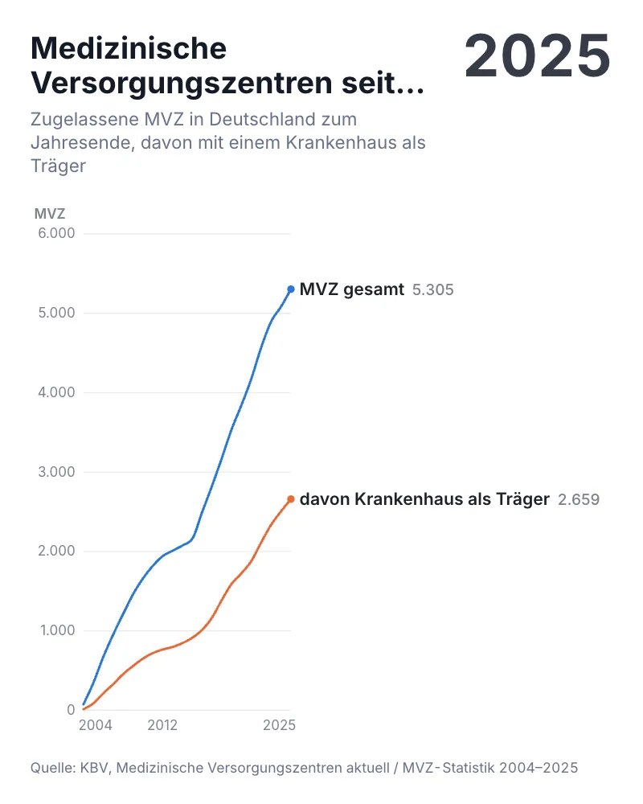

MVZ wachsen, ärztliche Einzelpraxen schrumpfen
In Medizinischen Versorgungszentren (MVZ) und anderen ärztlich geleiteten Einrichtungen arbeiteten Ende 2025 32.885 Ärztinnen und Ärzte, 2015 waren es 13.826. Das zeigt das Bundesarztregister der Kassenärztlichen Bundesvereinigung (KBV). Ihr Anteil an allen Ärztinnen und Ärzten in der vertragsärztlichen Versorgung stieg von 10,2 auf 22,4 Prozent. Die Zahl der ärztlichen Einzelpraxen sank im selben Zeitraum von 62.524 auf 50.701, minus 18,9 Prozent.


Das Wichtigste in Kürze
- MVZ: 70 (2004), 2.156 (2015), 5.305 (2025). 2.659 davon haben ein Krankenhaus als Träger, 50,1 Prozent.
- Angestellt: In MVZ arbeiten Ende 2025 32.062 angestellte Ärztinnen, Ärzte und Psychotherapeuten und 1.788 mit eigener Zulassung, 94,7 Prozent sind angestellt. Im Schnitt sind es 6,4 je MVZ.
- Köpfe nach Praxisform (ohne psychologische Psychotherapeuten): Einzelpraxis 69.860 → 64.103, Berufsausübungsgemeinschaft 51.679 → 50.143, MVZ und Einrichtungen 13.826 → 32.885.
- Die klassische Einzelpraxis – ein Arzt mit Zulassung, ohne angestellte Ärzte – ging von 56.892 auf 41.304 zurück, minus 27,4 Prozent.
Mehr Ärzte, weniger Installationen
Insgesamt arbeiten 2025 mehr Ärztinnen und Ärzte in der vertragsärztlichen Versorgung als 2015: 147.131 gegenüber 135.365. Die Installationen der 28 ärztlichen Praxissysteme in der KBV-Statistik sanken dagegen von 78.894 auf 68.191. Beides passt zusammen: Die KBV zählt Installationen, also Abrechnungen mit der Prüfnummer eines Systems, und ein MVZ mit sechs Ärztinnen und Ärzten zählt wie eine Einzelpraxis.
Für Hersteller und Schnittstellenanbieter verschiebt sich damit der Kunde. Statt vieler Einzelpraxen mit einem Arzt kaufen weniger, größere Einheiten: mehrere Standorte, eine gemeinsame Datenbank, angestellte Nutzer mit Rollen und Rechten, bei jedem zweiten MVZ ein Krankenhaus als Träger. Mit welcher Software Krankenhäuser ambulant abrechnen, zeigt Krankenhaus-Software in der ambulanten Abrechnung.


Was die Zahl nicht sagt
- Köpfe, keine Stellen. Das Bundesarztregister zählt Personen, nicht Vollzeitstellen; wie viel jemand arbeitet, steht nicht darin.
- Einzelpraxis ist nicht gleich Einzelpraxis. Auch in Einzelpraxen arbeiten mehr Angestellte: 7.336 Ärztinnen und Ärzte 2015, 13.402 im Jahr 2025. Deshalb sinkt die Zahl der Köpfe in Einzelpraxen (minus 8,2 Prozent) weniger als die Zahl der ärztlichen Einzelpraxen.
- Nur ärztlich. Mit den psychotherapeutischen Einzelpraxen, die von 20.021 auf 29.577 wuchsen, schrumpfen die Einzelpraxen insgesamt kaum. Die Aussage gilt nur für ärztliche Praxen.
- Zwei Statistiken. MVZ-Statistik und Bundesarztregister zählen die Personen in MVZ leicht unterschiedlich (2025: 33.850 gegen 34.317, jeweils mit Psychotherapeuten). Sie stehen deshalb in getrennten Grafiken.
- Investoren sind nicht ausgewiesen. Wie viele MVZ Finanzinvestoren gehören, erhebt keine bundesweite Statistik.
Gerechnet
Die Personen nach Praxisform ohne psychologische Psychotherapeuten sind gerechnet: Personen je Praxisform minus Psychotherapeuten je Praxisform (2016–2025, KBV-Datenportal), 2015 als Summe der ärztlichen Spalten aus Tabelle 5 der Registerstatistik; dieselbe Rechnung ergibt für 2025 exakt die Werte des Datenportals. Die Zahl der ärztlichen Einzelpraxen 2025, die Angestellten in Einzelpraxen und alle Anteile sind aus Tabelle 5 summiert bzw. geteilt. Der Anteil der Krankenhaus-MVZ ist aus zwei belegten Zahlen gerechnet. Die MVZ-Zahlen selbst sind alle belegt.
Quelle und Methode
Kassenärztliche Bundesvereinigung, Entwicklungen der Medizinischen Versorgungszentren und MVZ aktuell, Stichtag 31.12.2025; Gesundheitsdaten: Praxen und Ärzte nach Praxisform; Statistische Informationen aus dem Bundesarztregister 2015 und 2025, Tabelle 5. Abgerufen am 22. Oktober 2026. Die Installationen je System stehen in Welche Praxissoftware Arztpraxen nutzen, warum Psychotherapie-Praxen getrennt zählen, in Elefant vor MEDISTAR.
Häufige Fragen
Wie viele Ärzte arbeiten im MVZ?
Ende 2025 33.850 Ärztinnen, Ärzte und Psychotherapeuten laut MVZ-Statistik der KBV, davon 32.062 angestellt. Ohne psychologische Psychotherapeuten arbeiten laut Bundesarztregister 32.885 Ärztinnen und Ärzte in MVZ und anderen Einrichtungen.
Wie viele MVZ gibt es in Deutschland?
5.305 zum 31.12.2025. 2.659 davon haben ein Krankenhaus als Träger.
Stirbt die Einzelpraxis aus?
Die ärztliche Einzelpraxis wird seltener: 62.524 im Jahr 2015, 50.701 im Jahr 2025. Sie bleibt aber die häufigste Praxisform. Psychotherapeutische Einzelpraxen nehmen dagegen stark zu.